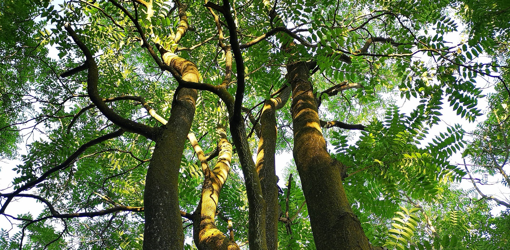
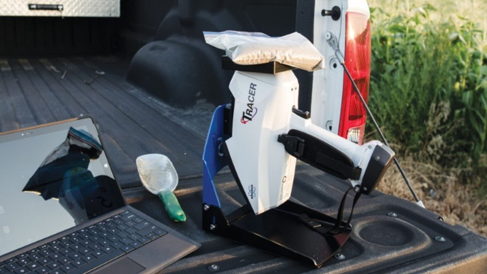

COSA SONO LE SPECIE ALIENE?
Le specie aliene sono piante che non appartengono all'ambiente in cui vengono introdotte. Possono alterare l'ecosistema e competere con le piante autoctone, mettendo a rischio la biodiversità locale.

COSA CONSIGLIA MANCUSO?
Stefano Mancuso suggerisce che non sia necessario eliminare le specie aliene, ma piuttosto gestirle in modo consapevole, per evitare danni irreparabili agli ecosistemi.

QUALI SONO LE CONROVERSIE EMERSE?
La proposta di Mancuso ha suscitato discussioni tra gli scienziati, che si dividono sull'approccio migliore per gestire le specie invasive. Alcuni preferiscono azioni più drastiche, mentre altri puntano su una gestione sostenibile.
